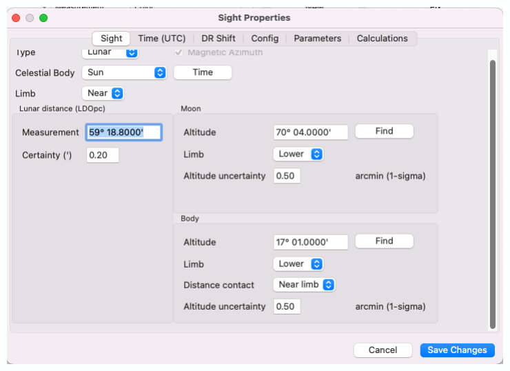

| Previous | Contents | Next |
Lunar distances · Page 40 of 66
Lunar Distance Use Case 1 “Sun-Moon” Aug 18, 2025 11:58 6. Input Lunar Sights into Celestial Navigation Plugin
Input the Measurements For Lunars, there are 3 angle measurements to input. The angle between the Moon and the Celestial Body, the Altitude of the Moon (w/Limb) to the Horizon. The Altitude of the Body (only the Sun has a Limb) to the Horizon.
Type: select Lunar. Celestial Body: select Sun
 |
| Open illustration at full size |
New Feature (v 2.4.66) - Sextant Measurements can be input in any of 3 OpenCPN supported “angles”. Decimal Degrees, Degrees-Min, and Degrees-Min-Sec. Redisplayed per OpenCPN display preferences Certainty or Altitude uncertainty (new. v 2.8.x). Measurement accuracy. Used to predict position uncertainty. You’ll achieve better certainty with Lunar distance than Altitude Measurements because Lunar distance doesn’t have Dip which is a large source of inaccuracy,
| Previous | Contents | Next |